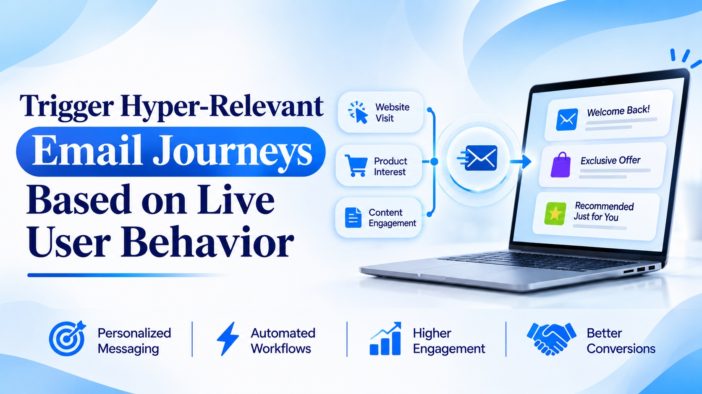

Trigger Hyper-Relevant Email Journeys Based on Live User Behavior

Most inboxes are crowded with messages that were scheduled days ago and mean nothing today. Behavior-triggered email automation changes that by sending a message only when a person does something that deserves a reply. A pricing page visit, a half-finished checkout or a week of silence can each start a different journey, and the email lands while the intent is still fresh.
Why scheduled campaigns fall behind
A calendar-based campaign treats every subscriber as if they were standing in the same place. Someone who already bought still receives the discount reminder. Someone ready to book a demo waits for step four of a nurture sequence. The timing is guessed, and the guess is usually wrong.
Teams that want to leave that pattern behind often start by adding AI-powered email workflow automation to the tools they already use, so that each event from the product and the website can decide what gets sent next.
Signals worth listening to
Not every click deserves an email. Pick a short list of signals that clearly show intent, then add more only when the first set performs.
- Page depth: repeat visits to pricing, integration or documentation pages.
- Abandonment: a started cart or form that stopped before the last step.
- Feature adoption: first use, repeated use or a key feature never touched.
- Email engagement: opens without clicks, clicks without conversion, or long silence.
- Account health: failed payments, support tickets and usage that falls week over week.
Design the journey in four steps
Keep each journey small enough that one person can explain it in a minute.
- Define the trigger. Write the event in plain words, such as "viewed pricing twice in 48 hours", and name the data source that reports it.
- Add context. Combine the event with plan type, region, past purchases and recent messages so the email speaks to a person, not a segment.
- Choose the action. Decide whether to send, wait, switch channel or stay quiet. Silence is a valid outcome.
- Close the loop. Record what happened next and feed it back so the journey improves.
Batch campaigns versus behavior triggers
The table shows where the two approaches differ in daily work.
| Factor | Batch campaign | Behavior trigger |
|---|---|---|
| Timing | Fixed schedule | Within minutes of an event |
| Audience | Broad segment | Individual with context |
| Content | Same for everyone | Matched to the action taken |
| Fatigue risk | High | Lower, with frequency caps |
| Learning | After each campaign | Continuous |
Guardrails that protect trust
Speed without limits becomes spam. Set a frequency cap so one person never receives more than a few triggered messages in a week. Add suppression rules for customers who just bought, opened a support ticket or asked to pause. Respect consent and regional privacy rules at the data layer, not as an afterthought in the template. When an AI model drafts or selects copy, keep a human review step for new journeys and log every decision so you can explain why a message was sent.
Measure what matters
Open rate alone says little. Track the outcome the journey was built for: completed checkouts, booked demos, activated accounts or recovered payments. Compare each triggered journey with a holdout group that receives nothing, so you can see the true lift. Watch unsubscribe and complaint rates as early warnings, and review them weekly during the first month.
Launch checklist
Frequently asked questions
What is a behavior-triggered email journey?
It is an automated series of messages that starts when a user takes, or fails to take, a specific action, such as viewing pricing or abandoning a cart.
How fast should a triggered email be sent?
For strong intent signals like cart abandonment, within minutes to an hour usually works best. For softer signals, a delay of several hours avoids feeling intrusive.
Do I need AI to do this?
Simple rules handle basic triggers well. AI helps when you need to rank signals, predict the best next step or personalize copy across many segments.
How do I avoid sending too many emails?
Use frequency caps, suppression lists and a priority order so that only the most relevant journey fires for each person.
What data do I need first?
Start with website events, product usage and purchase history, joined by a single customer identifier.
Start small, then expand
Pick one trigger, ship it with guardrails and measure it against a holdout group. Once the numbers show a real lift, add the next signal. Hyper-relevant journeys are built one useful message at a time.